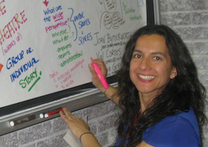
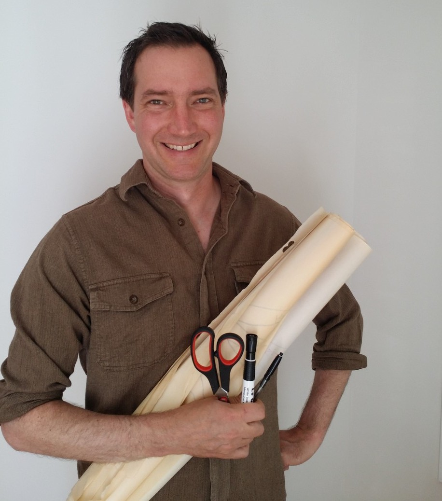
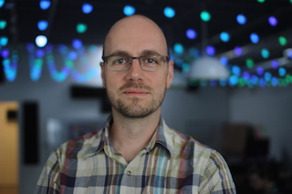

We provide inclusive and innovative learning experiences and consulting services in the area of leadership development, with a focus on cross-cultural communication and diversity for organizations that work towards transformative social change. Our systemic, experiential, and arts-based methodologies aim to uncover new insights and hidden patterns, and to foster creative problem solving.
Often, intercultural conflict and misunderstandings exacerbate due to lack of awareness of different cultural values and communication styles.
Through story-telling, theatre-based scenarios, and games I can help your organization learn about different cultural approaches to communication and design strategies to create inclusive spaces and practices.
I love designing and facilitating learning processes that are inclusive, spark change, and challenge our way of being, thinking, and doing.
Contact me for more information.
 I help organizations achieve their goals through a range of activities: program design, leadership development, conflict resolution, group facilitation, and "training for trainers" programs. I focus on arts-based adult learning, and I love creating inclusive, diverse spaces that enable creative cross-cultural communication. I integrate systems thinking into all my work, and these systemic considerations often provide the key insights to the problems I address. One of my core experiences is in the areas of higher education and student leadership development. I have designed, facilitated, and coordinated student leadership programs in Mexico, the United States, and Canada, and have supported service-learning programs and facilitated leadership development initiatives for over fifteen years. Learn more about me by going to my website, or e-mail me.
 I am a capacity builder. I like to see my role with organizations as filling a gap. My goal is to move an organization over a hurdle so that they can get on with their work.
I have been working with non-profits and community based organizations in a range of capacities since 1997. Much of this work has taken place overseas in the UK, Aotearoa/New Zealand, Sri Lanka, Madagascar, South Korea and the Galapagos Islands (Ecuador), as well as here in Canada. My work with organizations has spanned from teaching and training, facilitation, strategic and operational planning, monitoring and evaluation, network support and research.
Building capacity has been the central theme in all of my work. I want the organizations I work alongside to be stronger and more secure, with in-house skills they can apply to all their functions, from funding application to governance.
Learn more by visiting my Linkedin Page, the Development Action website or send me an email (lee@developmentaction.ca).
 I received my Ph.D in Computer Science from the University of Toronto in 2010, after studying how teams of software professionals work together. In my work I focus on the transfer of research results into practical applications, and I have consulted on fields such as Agile development practices, knowledge management, social network analysis, organization design, machine learning, and project evaluation. I have over six years of experience developing and managing software projects. Learn more about me here.